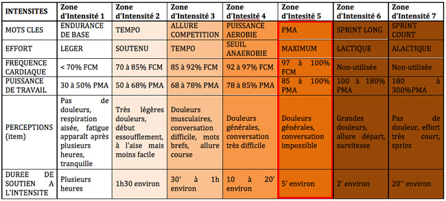

la puissance maximale aeorobie
qu'est-ce que la puissance maximale aeorobie (PMA) ?
La puissance maximale aérobie plus couramment appeler PMA correspond à la puissance(en watt) qu'un cycliste produit à
VO2 max, le temps de maintien à PMA est compris entre 3 et 6 min (le temps de
maintien à PMA peut varier en fonction du niveau de chaque cycliste), grâce aux
travaux de Julien Pinot
et Frederic Grappe, on observe que l'augmentation du niveau du cycliste est corrélé avec la décroissance du temps de
maintien à PMA mais il est aussi corrélé à l'augmentation de la puissance produite à PMA. La PMA est un indicteur essentiel
en cyclisme, elle permet le calibrage de zone d'intensités

de plus elle est l'indicateur de référence pour suivre sa progression, elle permet aussi d'estimer d'autre indicateur comme
le seuil, la ftp, ... (ces indicateurs seront estimés grâce à votre PMA
s'ils ne sont pas renseignés de vos paramètres d'athlète)
comment calculer sa PMA ?
IL existe de nombreux tests pour calculer sa PMA (un capteur de puissance est requis pour effectuer ces tests):
- le CP5 qui consiste à effectuer un contre-la-montre sur 5 min, le résultat du test correspond à la puissance
moyenne sur les 5 min d'effort, ce test pose plusieurs problèmes comme la difficulté à gérer son effort et le
fait que ce test ne prend pas en compte le temps de maintien à PMA de chaque cycliste mais ce test est le plus
simple A effectué.
- le test FFC qui consiste à exécuter un protocole précis;
- départ à 150W
- ajouter 15W toutes les minutes ou ajouter 30W toutes les deux minutes
le résultat du test correspond à la puissance produite avant l'épuisement, si cet épuisement arrive avant le passage
à un nouveau palier, le résultat du test correspond la puissance entre le palier actuel et le palier suivant, exemple:
palier actuel = 300W et palier suivant = 315 W, si l'épuisement intervient 30 secondes(ou moins) avant de passer à 315W
ma PMA est de 307,5 W.
où faire son test
le test de PMA peut être effectué:
- en laboratoire, mais ce test ne peut pas être effectué régulièrement.
- sur home trainer connecté, mais les valeurs de puissance sont plus ou moins fiables en fonction
du home trainer connecté.
- sur le terrain, cette méthode permet de faire le test avec le même capteur de puissance qu'a
l'entrainement,
grâce aux travaux de
Julien Pinot et Frederic Grappe on observe la puissance obtenue lors d'un test en montée est plus de 13% supérieur
qu'un test sur du plat ou en laboratoire, pour votre test il vous faut choisir une pente régulière et aussi pentue que
vos routes d'entrainement.
comment travailler sa PMA ?
il existe plusieurs exercices pour travailler la PMA:
- Le fractionné 30s/30 s, il est constitué de plusieurs séries elles-même constituées de répétitions de 1min (30 secondes
entre 120 et 135% de PMA et 30 secondes de récupération), cet exercice doit être effectué en cote, il est très simple à
exécuter et peu petre effectué sans capteur de puissance et Cardiofréquencemètre mais ne bénificira pas de la même efficacité.
- Le fractionné 2min/2min, il est constitué de plusieurs répetitions de 6min (3min entre 100 et 105% de PMA et 3min de
récupération) cet exercice doit être effectué avec un capteur de puissance ou un Cardiofréquencemètre et sur une pente régulière.